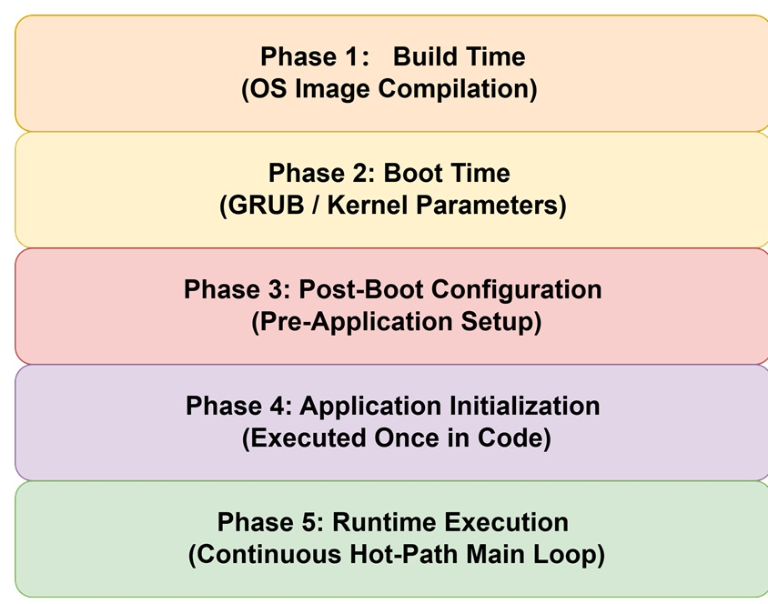
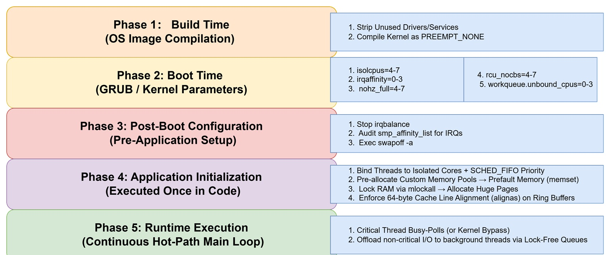

Low-Latency Engineering 5 : A Phase-by-Phase Implementation Checklist¶

Post 4 organized the low-latency toolkit by category: CPU isolation, reducing context switches, and everything else that rounds out the setup. That's the right way to understand why each technique works. But when you actually sit down to implement all of this, a different question matters more: when do I do this, and which file do I actually touch?
Some of these changes are baked into the OS image once and never revisited. Some are boot parameters that take effect on every restart. Some are operational configuration applied before the application even starts. Some are one-time setup code that runs when the application initializes. And some are behavior patterns that apply continuously, for as long as the application is running.
Splitting the same toolkit along this axis has a very practical payoff: when something's not working, you know immediately which layer to go debug — the image, the boot parameters, the ops scripts, or the application code itself.

Phase 1: Image Build Time¶
Changes here are compiled into the image and won't change again unless you rebuild it.
| Change | What it does | Where it lives |
|---|---|---|
| Trim unnecessary drivers / applications | Removes drivers and background services you don't need, cutting down potential interrupt sources and background scheduling targets | Image build scripts (trimming the installed package list) |
Compile the kernel's preemption model as PREEMPT_NONE |
Kernel-mode code won't be preempted eagerly, skipping the "should I preempt?" overhead that PREEMPT_VOLUNTARY/PREEMPT carry |
Kernel build config (CONFIG_PREEMPT_NONE=y) — requires a kernel rebuild |
⚠️ One clarification: this phase doesn't eliminate hardware interrupts themselves — as long as there's a NIC, a disk, and a clock on the machine, interrupts are still going to happen. What this phase does is reduce the number and variety of interrupt sources at the root. Which core an interrupt actually lands on is decided later, by IRQ affinity in Phase 2.
PREEMPT_NONEonly makes sense on top of the full isolation set up in Phase 2 — if the core has no other task competing for it, preemption-checking overhead is pure waste. Without that isolation,PREEMPT_NONEcan actually make worst-case latency worse, since kernel code could hold the CPU for longer stretches without yielding.
Phase 2: System Boot (Kernel Parameters)¶
Changes here go into your grub boot parameters, taking effect on every restart. No image rebuild needed — but you do need to reboot the machine.
| Parameter | What it does |
|---|---|
isolcpus=4-7 |
Pulls cores 4-7 out of the scheduler's general pool — regular tasks won't be auto-scheduled onto them |
irqaffinity=0-3 |
Restricts the default range for hardware interrupt delivery to cores 0-3, keeping interrupts off the isolated cores |
nohz_full=4-7 |
Disables the periodic timer tick on cores 4-7 |
rcu_nocbs=4-7 |
Offloads RCU callback processing for cores 4-7 onto other cores |
workqueue.unbound_cpus=0-3 |
Restricts unbound kernel worker threads (not tied to a specific core) to run only on cores 0-3 |
isolcpus=managed_irq,domain,4-7 (advanced, newer kernels) |
Also excludes managed IRQs that drivers choose to route on their own |
⚠️ One exception:
ksoftirqdand per-CPU-bound kworkers exist on every core by design and can't be excluded by these parameters. They're never formally banned — but as long as nothing triggers their work (e.g., interrupts have already been routed away byirqaffinity, so no softirqs get generated on that core), they simply stay idle. What you're removing isn't their eligibility to run — it's the trigger that would ever wake them up.
Phase 3: Post-Boot Configuration (Before the App Starts)¶
The system has already booted, but the trading application hasn't started yet. This configuration is applied by ops scripts or system services — typically requires root, and lives in system init scripts (a systemd service, rc.local, etc.).
| Configuration | What it does |
|---|---|
Disable the irqbalance service |
irqbalance automatically "balances" interrupts across all cores by default — including your isolated ones — which undoes irqaffinity. Must be stopped (systemctl stop irqbalance) |
Manually verify each interrupt's /proc/irq/<n>/smp_affinity_list |
Confirms critical interrupts (NIC, etc.) are explicitly bound to non-isolated cores, rather than relying on default behavior from the boot parameters |
| Disable swap entirely | swapoff -a, or don't configure a swap partition/file at the system level — removes any possibility of a swap-in/swap-out causing a millisecond-scale latency spike |
The distinction from Phase 2: Phase 2's parameters are the default policy locked in the moment the kernel boots. Phase 3 is fine-tuning applied after the system is already running, against specific devices and services — for instance, you often can't know a NIC's actual interrupt number until the system is already up.
Phase 4: Application Initialization (Runs Once, at Startup)¶
One-time setup code the trading application executes when it starts — not code that runs repeatedly inside the hot loop.
4.1 CPU Binding and Scheduling Policy¶
// Pin the critical thread to an isolated core (one of the cores from isolcpus=4-7 in Phase 2)
cpu_set_t cpuset;
CPU_ZERO(&cpuset);
CPU_SET(4, &cpuset);
sched_setaffinity(0, sizeof(cpuset), &cpuset);
// Set the scheduling policy to SCHED_FIFO with high priority
struct sched_param param;
param.sched_priority = 99;
sched_setscheduler(0, SCHED_FIFO, ¶m);
- The critical trading thread: pinned to an isolated core,
SCHED_FIFO(thoughSCHED_NORMALwould work fine too, since there's no competition on that core anyway). - Important-but-infrequent threads (risk checks, order cancellation logic, etc.):
SCHED_FIFO+ high priority, so they can preempt immediately the moment they're woken up.
⚠️ Risk to flag: a poorly designed high-priority
SCHED_FIFOthread (one that loops without yielding) will starve every other task on that core. Linux's defaultsched_rt_runtime_usprotection mechanism caps RT tasks at 95% of CPU time — fully lifting that cap requires setting it to-1, which should be done carefully and deliberately.
4.2 Memory Pre-Allocation and Locking¶
// 1. Request a large memory pool from the system once; no malloc/free at runtime
void *pool = mmap(NULL, POOL_SIZE, PROT_READ | PROT_WRITE,
MAP_PRIVATE | MAP_ANONYMOUS | MAP_HUGETLB, -1, 0);
// 2. Prefault via memset: forces minor faults now, so physical pages are already mapped
memset(pool, 0, POOL_SIZE);
// 3. mlockall: lock current and future memory to prevent swapping (note: no ONFAULT)
mlockall(MCL_CURRENT | MCL_FUTURE);
- One-time memory pool allocation: a custom memory/object pool, with no
malloc/freecalls at runtime (glibc'smalloctakes locks and can triggerbrk/mmapsyscalls). - Huge Pages: use
MAP_HUGETLBor hugetlbfs to map critical buffers as 2MB/1GB pages instead of the default 4KB, dramatically cutting the number of TLB entries needed and raising the odds those entries stay resident (not a 100% guarantee — still benefits from the isolation in Phases 2-3 to minimize TLB flushes). - Prefaulting (
memset): eliminates the minor fault that would otherwise happen on the buffer's first real access at runtime. mlockall(withoutONFAULT): prevents memory from being paged out. If locking the entire process's address space is more than you need, use the finer-grainedmlock()on just the critical buffers instead.
4.3 Cache-Line Alignment for Lock-Free Data Structures¶
struct alignas(64) PaddedIndex {
std::atomic<uint64_t> value;
char padding[64 - sizeof(std::atomic<uint64_t>)];
};
struct RingBufferControl {
PaddedIndex head; // occupies its own cache line
PaddedIndex tail; // occupies its own cache line
};
- For any variable shared across cores — a lock-free ring buffer's
head/tailpointers, per-core counters, and the like — usealignas(64)to force it onto its own cache line, eliminating false sharing. Without this, different cores end up repeatedly triggering MESI-protocol invalidations over a cache line they just happen to share, quietly canceling out the benefit of going lock-free in the first place.
Phase 5: Runtime (Continuous, for the Life of the Process)¶
Once the trading application is actually running, these are behavior patterns in effect at every moment — not one-time setup, but the way the application executes for its entire lifetime.
| Behavior | What it does |
|---|---|
| Busy-polling | The critical thread polls for data non-blockingly (a loop around recv(..., MSG_DONTWAIT)) instead of making blocking calls, avoiding the context switch that a thread suspend/wake cycle would trigger. Precondition: must run on a core isolated per Phases 2-3, with only this one thread on it |
| Kernel bypass (a more aggressive alternative) | Technologies like DPDK, Solarflare OpenOnload, or Mellanox VMA let data move directly from the NIC to user space via DMA, skipping the kernel network stack entirely — not just moving the syscall to another thread, but removing it altogether |
| Offloading non-critical syscalls to a background thread | Logging, monitoring, and other non-essential operations go to a dedicated background thread, communicating with the critical thread through the lock-free ring buffer built in Phase 4. The critical thread itself never enters the kernel for this |
The Full Pipeline, End to End¶

The core idea hasn't changed: every layer here is trading a controllable resource — extra CPU headroom, extra memory footprint, the cost of a reboot or a redeploy — for deterministic latency. The only thing that's different now is that you know exactly which file to touch and at which point in time each change takes effect, instead of treating this as one undifferentiated pile of optimizations.
-
#HighFrequencyTrading -
#PerformanceOptimization -
#DevOpsEngineering -
#LowLatency